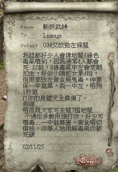

|
2002年11月26日
地龍的毒攻擊改為麻醉

鳴謝玩家斬妖武神提供資料，他發現地龍的毒攻擊由已往的漸漸扣血，改為現在的麻痺（像食屍鬼的一樣），而且中了毒後只有不足一秒的活動時間，因此如果要立即使用解毒藥水或樹枝是非常困難的。
PS：地龍的毒攻擊應為加入麻痺，即是說地龍現在有兩種的毒攻擊。
死亡騎士套裝的加成與負作用
來源：Lineage Playforum
英文翻譯：Lineage Compendium
韓國伺服器終於有玩家齊了死亡騎士套裝，穿著整套套裝（騎士專用）的加成為防禦-6，體力上限+40，魔力上限+20，同時在負重大過50%下仍然可以漸漸回復魔力，當然最重要的就是可以變身為死亡騎士，而且其變身是不可相消的（但其他的魔法效果應該會被相消）。
但此套裝有一個負作用，就是每20秒會損5血，因此想打得快的話是要付出代價的。 |